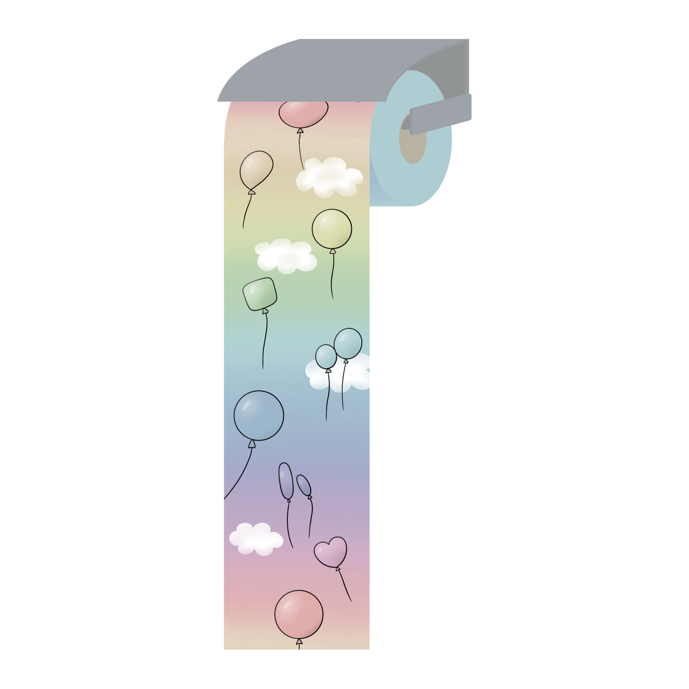

トイレットペーパーデザイン
2021.1
制作環境 illustrator,procreate
子供向けのトイレットペーパーをイメージしてトイレの空間が楽しいものになるようにアイデアを考えた。 必ずしもペーパーを点線で切るわけではないことに着目し、切り離したところがその日のラッキーカラーになるよう 8色の色を使った。その色を空に見立て、空がずっと続いているようにみせ雲や風船を置いた。
デザイン

子供向けのトイレットペーパーをイメージしてトイレの空間が楽しいものになるようにアイデアを考えた。 必ずしもペーパーを点線で切るわけではないことに着目し、切り離したところがその日のラッキーカラーになるよう 8色の色を使った。その色を空に見立て、空がずっと続いているようにみせ雲や風船を置いた。